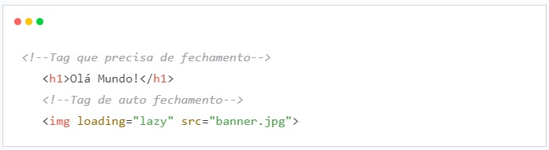

Navegação
Tags HTML
As tags são formadas por uma estrutura própria, iniciam com o sinal “menor que” (<), em seguida vem
o nome daquele elemento e por fim, o sinal “maior que” (>).
Podem ser dispostas em tags que precisam de fechamento e tags que fecham sozinhas
(self-closing).

Tags semânticas
Tags semânticas são tags que possuem um significado, que dão sentido a informação de texto ao navegador e buscadores.
- header
- main
- footer
- section
- article
- aside
- nav
- ol
- ul
- li
Exemplo de estruturação com tags semânticas: